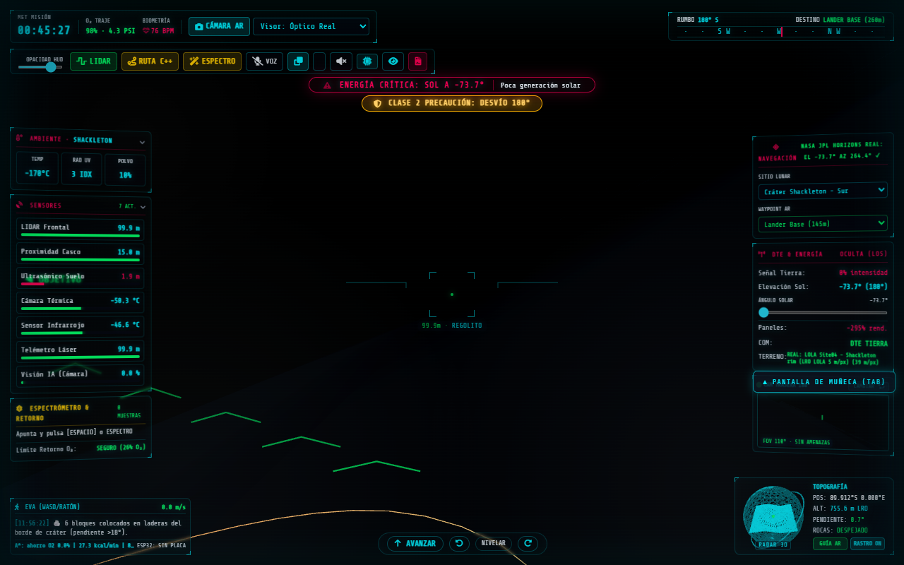

Un casco de EVA que no muestra datos: decide por dónde pisar.
Terreno real del polo sur, ruteo metabólico, efemérides en vivo y telemetría con hardware — en un único archivo que cualquiera puede abrir.
DEMO EN VIVO → gestion2026.online«Un astronauta no necesita más números. Necesita la decisión correcta ya proyectada sobre el suelo».
Primera persona, 1/6 G, con corredor de dos flechas, retícula láser, cámara trasera, muñeca táctica y alertas C&W conviviendo en el mismo fotograma.
No es un dashboard que miras: es el campo de visión por el que caminas. Un enlace público, sin instalación, sin cuenta y sin servidor.

Cualquier persona abre el enlace y camina sobre el borde del cráter real — no sobre una función seno.
| 01 | A* metabólico — grid 21×15, pendientes >25° y rocas como coste; ahorro de O₂ y kcal/min en pantalla; chevrons que siguen el terreno. |
| 02 | Visión artificial — Canny en JS puro (Sobel, NMS, histéresis 55/150) + contornos; cajas AR con distancia estimada desde la webcam. |
| 03 | Efemérides en vivo — Sol AZ/EL y Tierra desde 89,9°S; si EL < 0, conmutación real a relé GATEWAY. |
| 04 | C&W 1/2/3 + Fail-Safe — monocromo, 20 fps y consumo mínimo ante batería, radiación o emergencia sostenida. |
| 05 | Telemetría PC ↔ ESP32 — JSON cada 250 ms, uplink 10 Hz, demonstrable en Wokwi sin comprar una placa. |
Y lo que no pudimos probar, también está escrito: firmware no flasheado en placa física y cámara limitada en el navegador sin webcam. La honestidad es parte del diseño.
REPO PÚBLICO · DEMO · GUÍA WOKWI · TODO REPRODUCIBLEHoy funciona en la web. Mañana: más sitios de aterrizaje, perfil metabólico por astronauta, exportación de rutas y la misma telemetría en una placa real.